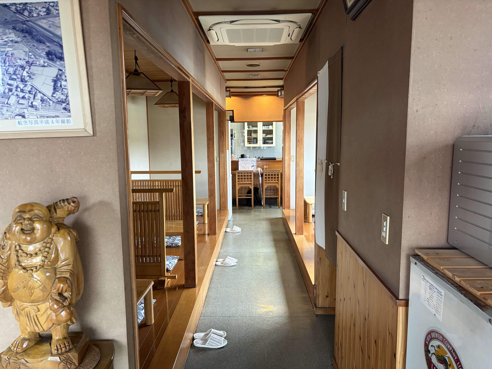
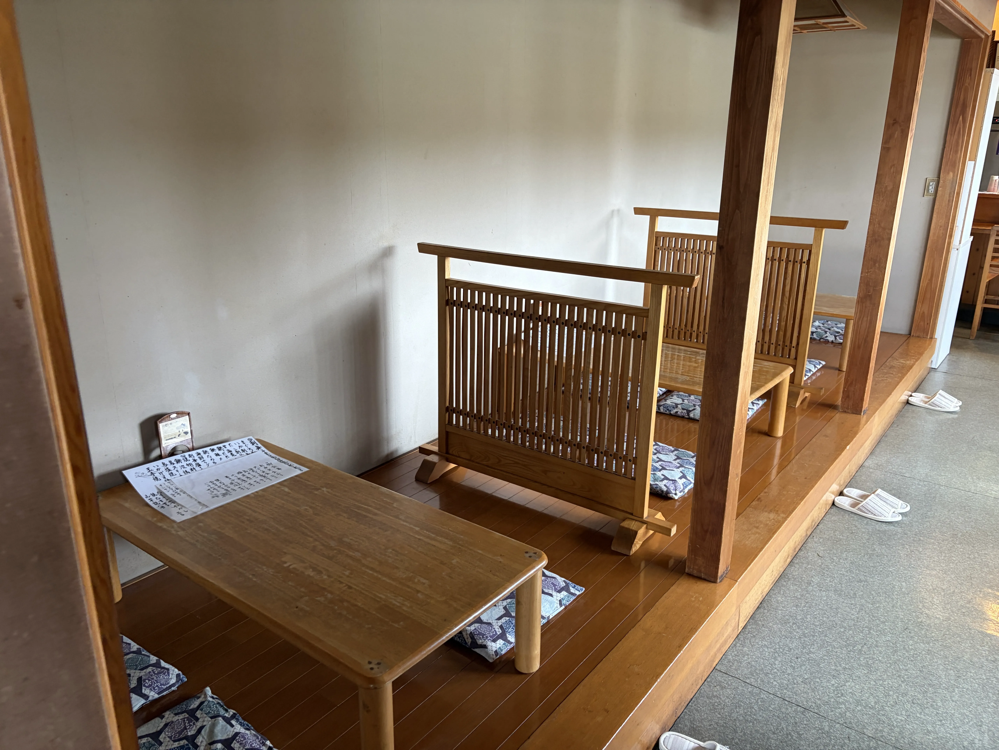
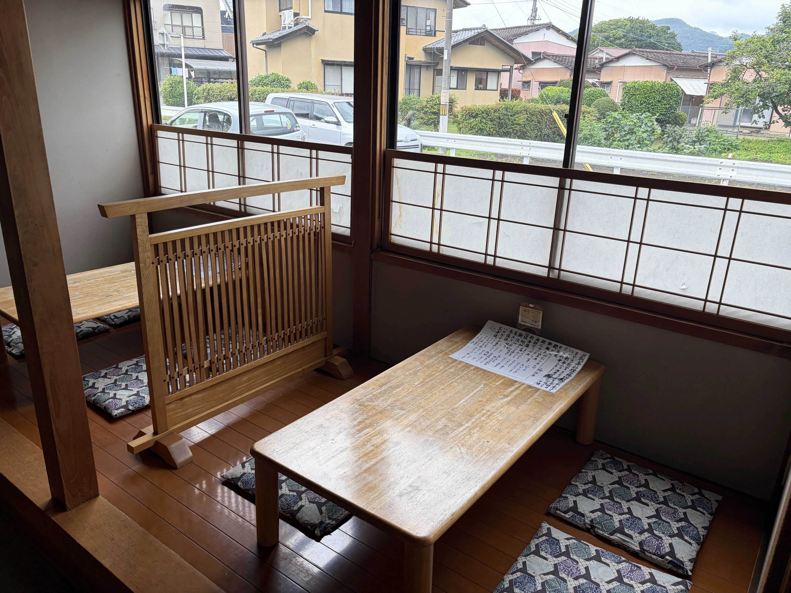

割烹 大川の基本情報、店内の様子、アクセス方法のご案内
| 店名 | 割烹 大川 |
|---|---|
| 所在地 | 〒376-0002 群馬県桐生市境野町7-1794-2 |
| 電話番号 | 0277-45-0135 |
| 営業時間 | 18:00～22:00 |
| 定休日 | 水曜日・木曜日 |
| お支払方法 | 現金、各種クレジットカードがご利用いただけます。 |
| 駐車場 | 店舗横に専用駐車場がございます（約5台分）。 |
| ご予約について |
ご予約はお電話からお願いいたします。 フグ料理は完全予約制となりますので、事前にご予約の旨をお伝えください。 |
北関東自動車道 太田桐生ICより車で約20分。
群馬県道・栃木県道67号桐生岩舟線（旧国道50号）から境野町方面へ進み、境野町7丁目の交差点を目印にお越しください。店舗横に駐車場を完備しております。
JR両毛線 「小俣駅」よりタクシーで約5分、または徒歩約20分。
東武桐生線 「新桐生駅」よりタクシーで約10分。
木の温もりが感じられる、活気あふれる心地よい空間です。
お一人様からご家族連れ、ご宴会まで幅広いシーンでご利用いただけます。写真をタップすると拡大してご覧いただけます。


